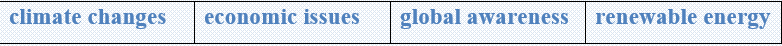
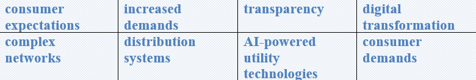

People have been using wind energy for thousands of years. People used wind energy to propel boats along the Nile River as early as 5,000 BC. By 200 BC, simple wind-powered water pumps were used in China, and windmills with woven-reed blades were grinding grain in Persia and the Middle East.
Energy from moving air
Wind is caused by uneven heating of the earth's surface by the sun. Because the earth's surface is made up of different types of land and water, it absorbs the sun's heat at different rates. One example of this uneven heating is the daily wind cycle.
The daily wind cycle
During the day, air above the land heats up faster than air over water. Warm air over land expands and rises, and heavier, cooler air rushes in to take its place, creating wind. At night, the winds are reversed because air cools more rapidly over land than it does over water.
In the same way, the atmospheric winds that circle the earth are created because the land near the earth's equator is hotter than the land near the North Pole and the South Pole.
Wind energy and the environment
Wind is a renewable energy source. Overall, using wind to produce energy has fewer effects on the environment than many other energy sources. Wind turbines do not release emissions that can pollute the air or water (with rare exceptions), and they do not require water for cooling. Wind turbines may also reduce the amount of electricity generation from fossil fuels, which results in lower total air pollution and carbon dioxide emissions.
Task 1 Vocabulary
Find the endings of the given words in the text.
1. Emis………….
2. Relea………….
3. Equa………….
4. Drai…………...
5. Electri…………
6. Pollu………….
7. Excep………….
8. Merch………….
9. Renew…………
10. Unev……………
11. Resu……………
12. Bla…………….
13. Equa……………
14. Cyc…………….
Task 2 Reading
Read the text and answer the questions.
🔹 For what was wind used by 200BC in China?
🔹 In which places, were windmills with woven-reed blades grinding grain?
🔹 Is the land near the earth’s equator hotter than the land near the North
Pole and South Pole?
🔹 By the 11th century, for what purpose were wind pumps and windmills used in
Middle East?
🔹 Who developed large wind pumps to drain lakes and marches in the Rhine
River Delta?
🔹 Do wind turbines release emissions?
Task3 Make up sentences using the ideas given.
🔸Wind energy is a _______________________________________________
🔸Wind turbines do not release____________________________________¬¬¬-__
🔸At night the winds are___________________________________________
🔸One advantage of wind energy is__________________________________
🔸Another advantage of using wind energy is__________________________
🔸One disadvantage of wind energy is that____________________________
Task4 Listening
Listen and circle the tense of the verb youhear.
1 present / past
2present / past
3 present / past
4 present / past
5 present / past
Listen and complete the sentences with theword you hear.
1 ____________________ a lot of photos?
2 ____________________ to work by train?
3 ____________________ the bus?
4 ____________________ on Fridays?
5 ____________________ near you?
Task5 Writing
✔️ Learn the given lexical units.
✔️ Work in groups and explain the meanings of the given lexical units.
✔️ Try to use them in sentences.


Read the case and give some solutions
After 2020, a lot of things have changed. The 2020s have brought a pandemic, weather and climate changes. These changes have interconnected with a variety of political, social, and economic issues, causing increasing global awareness of renewable energy. Relatively, consumer expectations are becoming more complex, with increased demands for choice and transparency as to how energy is consumed and distributed.
Accordingly, there is an urgent need for digital transformation in order to manage complex networks and distribution systems. Changing from human-controlled carbon-based power generation to AI-powered utility technologies will assist in supporting consumer demands and offering a greater degree of protection from cybercrime.
Suggest some efficient ways of digital transformation and applying
AI-powered technologies.
What does “digital transformation” mean?
What is the problem with waste removal?
How serious is this situation?
What is the cause of this problem?
How it is successfully solved?
What is the most optimal solution?
Can present some tips on improving the situation?